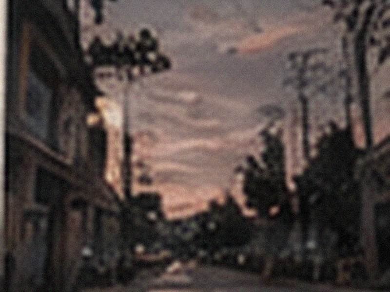
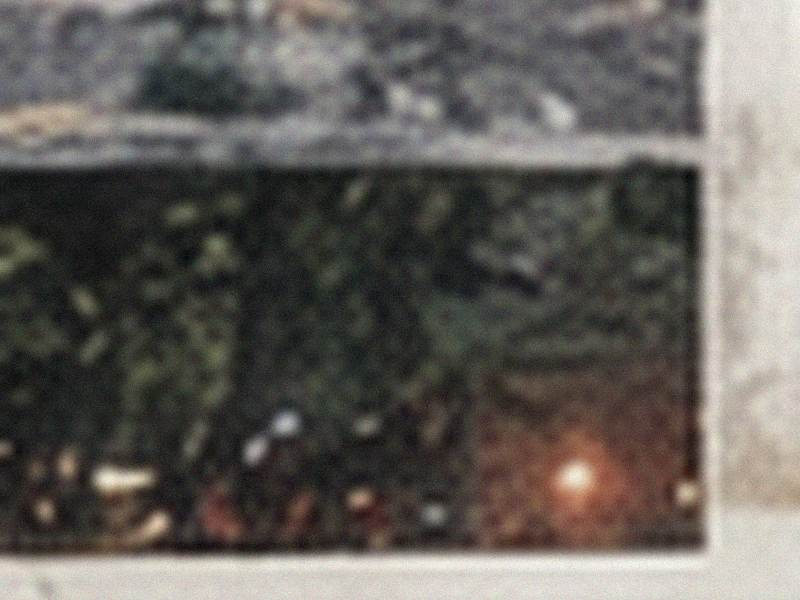
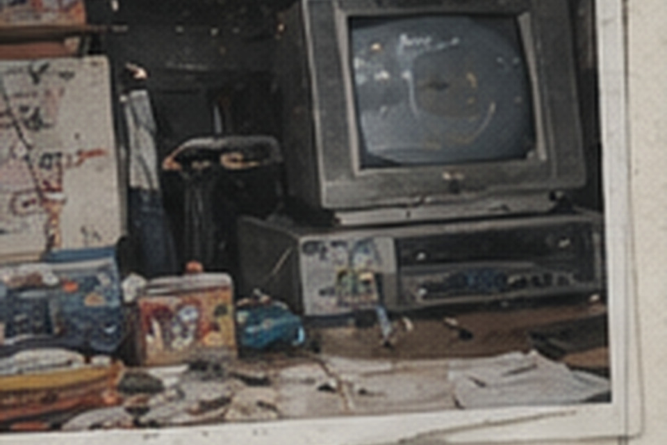
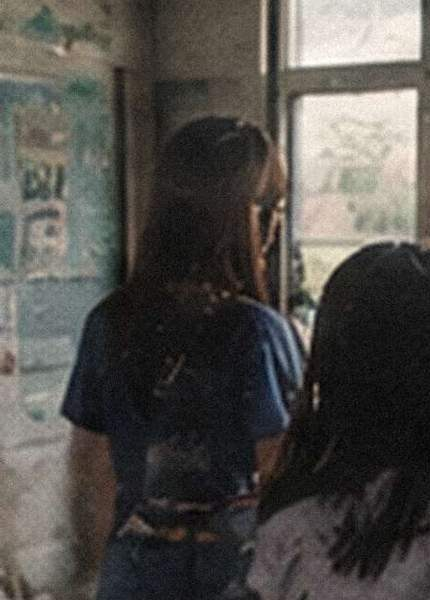
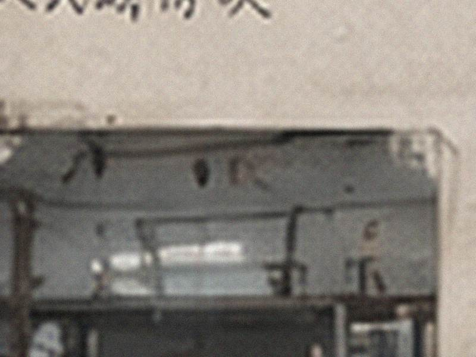
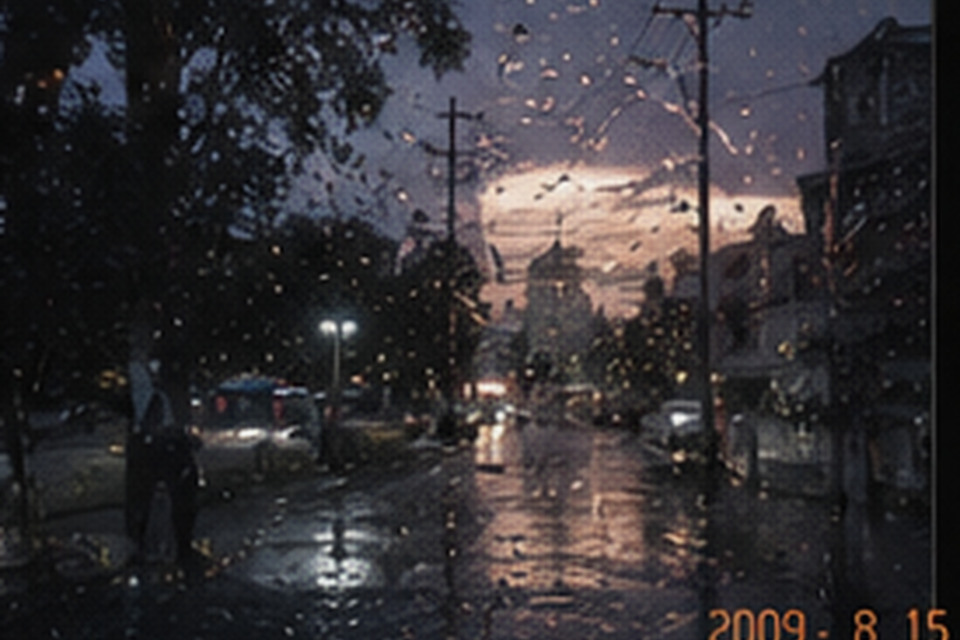
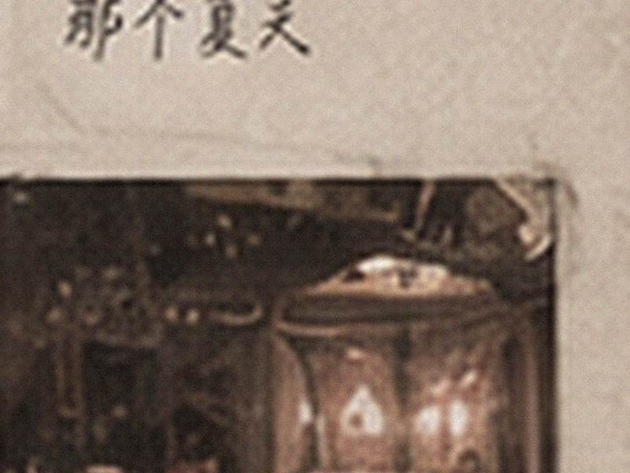
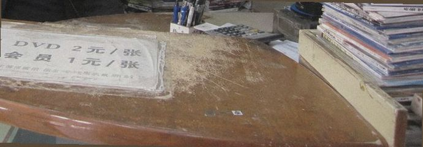
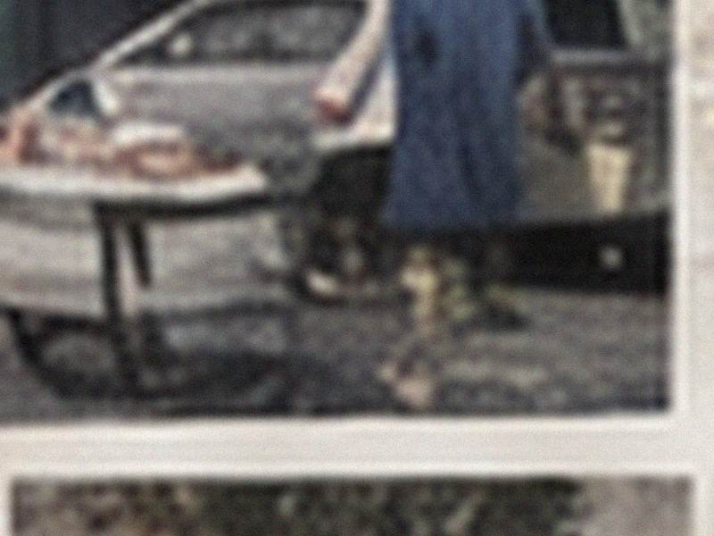
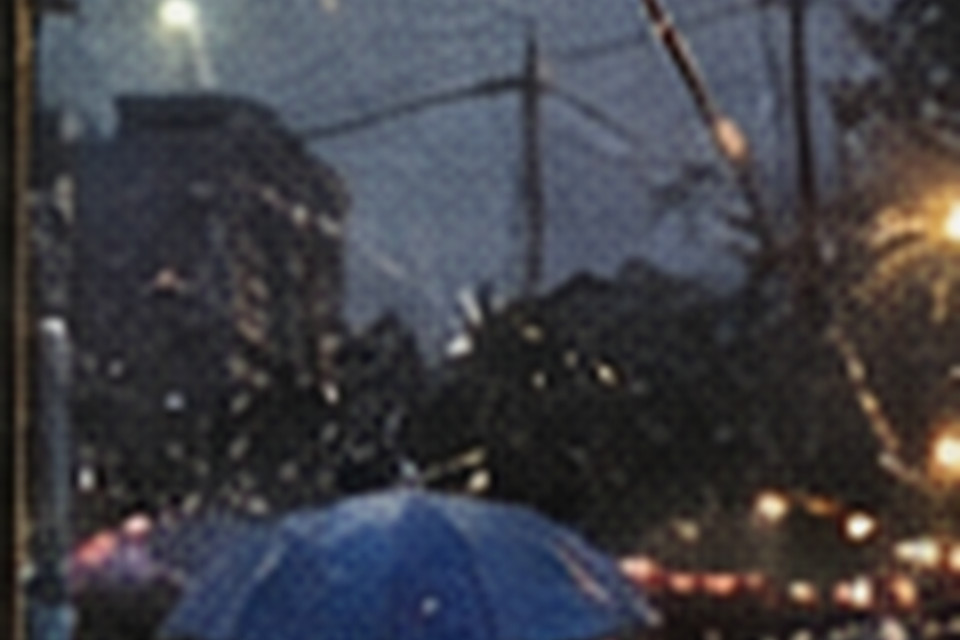

全部照片 / 按拍摄年份143项 已标记 26 待补说明 5
收录来源：店内旧相册、顾客投稿、闭店扫描。拍摄日期、上传日期和后期扫描日期分别登记。
2003—2007



2008


2009



年份待核2011


2017

2026

人物散页：许芹
这些照片原先来自不同投稿，闭店整理时按背面姓名和老顾客说明归在一起。没有补写后来发生的事。


推荐本夹页：《鬼来电》不好看，别信谢远。
老板补记：裂过的DVD盒被她拿透明胶粘得很难看；另有一次晚还一天。
相机卡标签：红笔写“不要删！！”，两个感叹号。
活动来源：河西县文化馆青年照片小展。
柜台旧日历夹页：2009年8月15日下午，来店。
待补说明
| U-04 / 柜台东侧 | 跨年份位置待补 | 打开 |
| 2009店内 | 位置草图待补 | 打开 |
| 店内合照 | 拍摄年份待补 | 打开 |
| 论坛旧帖 | 引用来源待核 | 打开 |
| 2011合照 | 人物姓名待补 | 打开 |
U-04｜柜台搬移记录
2010-12-18 柜台维修单
旧直角柜台拆除，柜体作废；三只木抽屉拆下暂存。二层抽屉右背板记有两处并列旧螺孔；新弧形前台安装后，维修单未另记抽屉采购。
2017-04-03 缩店移位单
东侧打印柜整体移位。木工只登记“二层滑轨卡涩，换轨”；另记抽屉右背板双孔未补。当日无主物箱单独登记围巾、钥匙、卡套等。
2026-09-18 闭店整理
清理东侧旧柜第二层抽屉，抽出刻录盘、SD卡及带姓名纸条；抽屉右背板仍可见两处并列旧螺孔。
位置状态已保存。
河西生活网旧帖附件
河西生活网旧帖附件
2009店内｜位置草图待补
参考影像来自店内旧相册，拍摄方向未登记。
待放标注
使用说明
桌面端可拖动标注；触屏可先点名称，再点A/B/C。
后墙固定开口正门方向主通道
A
B
C
草图已保存：A / 收银台，B / 连续剧架，C / 侧门。
店内照片｜拍摄年份待补
原图另存了三个局部，编号与照片位置对应。
| 推定拍摄年份 |
|---|
拍摄年份已补为2011；2013只保留为论坛上传时间。
2011合照｜人物姓名待补
人物栏为空。以下材料来自不同来源。
| 照片人物 |
|---|
人物说明已补：许鸣。四份来源已核对。
打开SD卡静态照片索引
打开SD卡静态照片索引